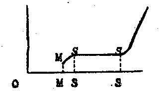
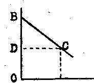

Librairie de Médicis — 1948 (deuxième édition)
par Richard von Strigl
traduit par P. Ochwald
La loi des coûts exprime le fait que, dans une économie, qui n'est soumise à aucune contrainte opposée à ses effets naturels, la tendance à adapter les prix des produits au niveau des coûts se fera sentir parce que chaque divergence entre un prix de vente et un prix de revient — que ce soit vers le haut ou vers le bas — entraînera des changements qui agiront sur la fixation des prix de revient des produits en question. Commentons certains points de cette formule prudemment rédigée. Tout d'abord, il est question de "tendance". Par là, on exprime que les prix des produits ne sont pas nécessairement des prix de revient ; au contraire, la possibilité de divergences entre eux reste complètement ouverte. Ce qui est tenu pour nécessaire, ce n'est pas la concordance entre le prix du produit et la grandeur des coûts de la production, mais le fait qu'une divergence entre les deux entraînerait des changements agissant dans le sens d'une adaptation. Et avec cela, il n'est pas encore dit que ces modifications aboutiraient à une adaptation complète. Il reste la possibilité de voir intervenir, avant cette adaptation, de nouveaux changements, qui auront pour effet de déplacer l'adaptation vers un nouveau prix. Enfin, dit-on, la loi des coûts ne peut agir que lorsque son effet ne rencontre aucun obstacle. En général, la condition impliquée par cette formule négative n'est autre que la condition d'un régime de concurrence libre, non entravée par des mesures quelconques. Mais ici la formule que nous avons d'abord citée a une signification particulière. Il faut, en décrivant une certaine économie, ou une exploitation, dans laquelle la loi des coûts n'a pas d'efficacité, pouvoir définir de façon positive ses dispositions intérieures, qui pourraient empêcher la loi des coûts d'agir. Nous y reviendrons. Encore une chose à mentionner : On peut discuter et, souvent, se demander à bon droit ce qu'on doit comprendre sous la mention "coûts", et là nous rappellerons la complication des formules que nous avons dû établir en analysant la composition des coûts d'une exploitation industrielle moderne (figure 8). Pour commencer, on fera bien de ne pas trop s'attacher aux détails et de compter dans les coûts tout ce que le producteur doit dépenser pour payer les moyens de production dont il a besoin, ou ce qu'il devrait payer, s'il ne les possède déjà. Il faudra donc compter dans les frais les salaires des ouvriers et le prix du terrain, ainsi que ce qu'on doit dépenser pour payer les machines, les matières premières, etc., puis les émoluments convenables pour l'activité propre du producteur, et enfin un supplément pour un bénéfice d'usage ("civil"), qui doit être considéré comme le stimulant de la production. Enfin, pour terminer, la loi des coûts contient une condition relative à la mentalité du producteur, — condition qui n'est pas relevée spécialement da,s nos formules, mais n'en existe pas moins ! C'est que les producteurs soient guidés par le désir de gagner, qu'ils s'efforcent d'éviter des pertes, et que, s'il existe quelque part une possibilité de réaliser un bénéfice, ils cherchent à l'exploiter. Cette supposition qu'on interprète souvent de façon tout à fait erronée, n'a pas besoin d'autres commentaires.
Et maintenant, les réactions qui se montreront lors des divergences entre prix des produits et prix de revient peuvent agir dans trois sens différents (l'importance qu'on a donnée tour à tour à chacun d'eux est caractéristique de la doctrine alors en faveur). Citons-les d'abord brièvement, et ensuite nous les commenterons de plus près.
1. Changement du prix des produits par modification des quantités produites et offertes.
2. Changement du prix de revient par suite de changements dans la demande de moyens de production, ce qui entraîne un changement dans les prix de ces derniers.
3. Changement du prix de revient entraîné par une modification de l'organisation.
Étudions d'abord ce qui se passe dans une entreprise qui travaille avec des revenus constants, où le prix de vente qui s'établit sur le marché diffère passablement du prix de revient. Si ce prix de vente est inférieur aux coûts, les diverses exploitations n'auront aucun intérêt à accroître leur production ; au contraire, la plupart la diminueront. Si dès lors nous faisons la supposition — justifiée dans presque tous les cas — que certains producteurs travaillent à meilleur compte que d'autres, et que la production plus économique de ceux-là provient de certains avantages de l'exploitation (situation favorable, possession d'un avantage quelconque dans la fabrication, ou encore effet d'une meilleure direction de l'exploitation), alors on pourra admettre que les industriels travaillant trop cher seront bientôt forcés de cesser une production qui leur cause des pertes (arrêt momentané ou peut-être définitif). L'effet de cette réaction des producteurs sera de diminuer l'offre des produits en question sur le marché. Le prix du produit devra augmenter, et se rapprocher ainsi du prix de revient. Inversement, si les producteurs font de gros bénéfices, de nouveaux producteurs apparaîtront, et l'offre croissante abaissera le prix du produit et le rapprochera du prix de revient. Cette tendance de la modification de la grandeur de l'offre — diminution si les prix sont en perte, augmentation s'ils sont en bénéfice — agira s'il n'y a pas d'autres causes de troubles, toujours aussi longtemps que l'adaptation du prix de vente au prix de revient n'aura pas encore eu lieu.
Comme nous attendons ici une modification du prix de vente dans le sens d'un rapprochement avec le prix de revient, il est aussi possible que, inversement, le prix de revient tende à s'adapter au prix de vente. Cette tendance ira en quelque sorte au-devant de celle que nous avons décrite auparavant, elle jouera le rôle de stimulant. Si la réaction produite par les quantités offertes sur les prix de vente du produit, qui sont plus bas ou plus hauts que les prix de revient, a pour effet de limiter ou d'étendre la production, cela signifie aussi une demande plus réduite en moyens de production : Ainsi se déclenche une tendance à la baisse ou à la hausse des prix de ces moyens de production. Les prix plus bas de l'outillage entraîneront alors une baisse des prix de revient des produits, des prix plus élevés amèneront au contraire une hausse de ces derniers.
A côté de ces faits, faciles à constater, l'examen d'une troisième réaction qui agit dans le même sens que la loi des coûts, soulève de plus grande difficultés. Nous trouverons un moyen fort simple d'élucider ce problème — après étude préalable de la composition des revenus — en considérant ce qui se passe dans une production à revenu décroissant, pour laquelle nous pouvons prendre comme exemple une exploitation agricole.
Supposons que dans tel domaine agricole on utilise, comme moyens d'exploitation, exclusivement la terre disponible, et que le travail des ouvriers rapporte en permanence de gros bénéfices (nous ne tiendrons donc pas compte des fluctuations de la récolte). La production ne peut se développer qu'en embauchant plu d'ouvriers. Chaque producteur, pour sauvegarder ses intérêts, s'efforcera de développer sa production, puisqu'il pet gagner d'autant plus qu'il produira davantage. mais, nous l'avons vu, dans ce cas, si l'extension de la production est possible elle se fera avec des revenus décroissants. cela veut dire que chaque ouvrier supplémentaire amène bien un supplément de revenu, mais que ce supplément devient toujours plus faible à mesure qu'on embauche du personnel en plus ; cela veut dire aussi que — autre façon de l'exprimer — toute augmentation de revenu exige un supplément de frais de main-d'oeuvre pour chaque unité du produit. Si donc le salaire même de l'ouvrier reste inchangé, — et l'on ne saurait certes même pas s'y attendre — les travaux accrus pour développer la production entraîneront plutôt une hausse des salaires, dont nous ne parlerons pas pour l'instant, et la production en développement progressif sera toujours plus chère du fait des revenus décroissants. Le renchérissement de la production par son propre développement en vue d'une certaine constitution des revenus signifie donc de nouveau qu'il y aura hausse des prix de revient, et cette hausse favorisera l'autre tendance à l'adaptation, c'est-à-dire la baisse des prix de vente du produit par augmentation de l'offre. Nous voyons donc découler de cette formation des revenus une conséquence qui agit dans le même sens que la loi des coûts. Il suffit ici de le signaler. Nous ne nous occuperons pas non plus de ce qui se passe lorsqu'on travaille à perte (en ce cas, une réduction de la production conduirait à des revenus-limites croissants). Plus tard seulement, nous aurons à nous demander ce qui se passera dans une entreprise employant des capitaux, mais travaillant d'autre manière à constituer ses revenus.
Nous émettrons d'abord quelques propositions se rapportant aux questions de la formation des prix des moyens de production, et cela en partant de la loi des prix, développée plus haut. Nous traiterons d'abord de la formation des prix du travail, du salaire. Le raisonnement se fera, comme pour l'étude générale de la loi, en partant de l'offre et de la demande. Nous devrons donc voir comment les circonstances particulières qui régissent le marché du travail influencent ces deux facteurs, et sans doute ne trouverons-nous pas là de divergences avec ce que nous avons déjà constaté dans notre étude des marchés en général.
La demande des producteurs en main-d'oeuvre dépendra évidemment du fait que le salaire du travail devra être incorporé dans le calcul des coûts comme prix d'un moyen de production. Il résulte immédiatement de nos explications précédentes sur les faits qui constituent la loi des coûts, que la demande de main-d'oeuvre pourra absorber d'autant plus de cette main-d'oeuvre que le salaire sera plus faible, et, inversement, que la demande en travail aura la forme normale d'une courbe de demande, donc une pente de gauche à droite. Deux faits vont ici intervenir dans la constitution de la demande ; ils ont déjà joué un rôle important lors de la démonstration de la loi des coûts.
1. Des salaires faibles abaissent les frais de production, et donnent par conséquent la possibilité de vendre plus de produits, donc de produire plus et d'occuper plus d'ouvriers.
2. Des salaires faibles donnent la possibilité d'aller plus vers la droite le long de la courbe de la formation des revenus du travail, c'est-à-dire de développer la production dans un domaine qui fournit des revenus plus faibles.
De ces relations découle l'explication de la formule usitée aujourd'hui pour la théorie des salaires. Le salaire est déterminé par le prix du produit marginal du travail : le producteur paiera à l'ouvrier ce qui correspond à la partie du produit résultant du travail exécuté par cet ouvrier. Par suite de la formation des revenus, — tout le monde dans le cas, étudié ici, du revenu décroissant, la grandeur de cette partie du produit ne peut être déterminée que comme le supplément de revenu fixé par le tracé de la courbe des "revenus marginaux", lequel supplément de revenu dépend du travail ou de la collaboration d'un ouvrier (du "dernier" ouvrier, ou "ouvrier-limite"). Plus on occupera d'ouvriers, plus petit sera ce produit marginal du travail, et aussi d'autant plus petit le bénéfice attendu de la vente du produit, d'autant plus petite aussi l'offre de salaire que les producteurs pourront faire. Voilà ce qui se passe pour la demande en main-d'oeuvre.
De très nombreuses questions, souvent fort discutées, se rattachent à celle de la formation de l'offre de main-d'oeuvre sur le marché du travail. Un raisonnement très simple pour la courbe de l'offre qui monte de gauche à droite découle de l'idée suivante : Les ouvriers veulent travailler pour gagner leur vie. L'offre de travail découle donc d'une pression, d'une nécessité sociale, de la nécessité d'un gain. Cette pression agira plus ou moins fortement sur les ouvriers, suivant leurs besoins personnels. Cela aura pour conséquence que l'un sera déjà disposé à travailler pour un salaire plus bas, d'autres pour un salaire plus élevé. De là résulte une accumulation d'offre de travail suivant le niveau du salaire. L'offre sera d'autant plus grande que le salaire sera plus haut. Et l'on ne changera rien à ce principe si l'on considère que les travailleurs peuvent obéir à d'autres causes de recherche de travail que les motifs cités plus haut, — sans nous occuper du tout s'ils le font à tort ou à raison. Nous ne pouvons ici développer ce raisonnement. Mais il est intéressant de donner une courte indication sur le tracé que suivra probablement la courbe représentative de l'offre de main-d'oeuvre. Les circonstances seront très différentes dans chaque cas, suivant les possibilités qui existent dans tel ou tel pays, mais en général le raisonnement suivant pourra être considéré comme exact : Pour un salaire qui serait au-dessous d'un minimum aussi bas que possible des conditions d'existence, on ne trouvera pratiquement guère d'offre de travail. Ce n'est que pour un taux de salaire correspondant au minimum de ce genre d'existence que se manifestera une certaine offre de main-d'oeuvre ; elle ira en augmentant si le salaire monte encore. En effet, bien des ouvriers se tiendront éloignés du marché normal du travail si le taux des salaires est par trop bas et essaieront de se procurer n'importe comment de quoi assurer leur existence. Pour un taux de salaire qui correspond au niveau de vie normal des ouvriers, la plus grande partie de ces ouvriers sera prête à travailler. Il ne sera guère possible d'élever beaucoup l'offre de travail par une élévation nouvelle des salaires. De ces considérations, il résulte que la courbe de l'offre du travail commencera par monter très lentement (à supposer qu'elle monte en général, chose qui dépend de l'écart entre le minimum du niveau de vie des travailleurs et le niveau de vie habituel) — elle montera ensuite très vite (figure 9). Cette forme que prendra l'offre de travail peut toujours être considérée comme dépendant des circonstances du moment. ne parlons plus ici des "glissements" ou des déplacements de l'offre de travail, mais disons seulement une chose : L'expérience montre qu'une forte compression des salaires peut amener une augmentation de l'offre de main-d'oeuvre, si la diminution du niveau de vie ainsi obtenue a pour effet de pousser les femmes à chercher du travail en plus grand nombre. Inversement, un salaire plus fort pour des hommes peut pousser des femmes à quitter le marché du travail, et faire ainsi diminuer l'offre. De façon semblable, on pourrait parler dans certains cas d'une relation entre le niveau des salaires et la durée du travail. Certes, cette relation est typiquement "dynamique", selon la manière dont fonctionnent les relations citées plus haut (pages 22 et suivantes). Elle n'exclut nullement qu'à cet instant existe toujours la montée de gauche à droite de la courbe de l'offre. Le point d'intersection de la courbe de l'offre et celle de la demande nous donnera, pour la fixation du taux des salaires comme en marché libre, un prix qui correspondra aux conditions énoncées (page 17), précisément pour ce genre de prix. Nous parlerons plus tard, page 137, d'une particularité qui peut se produire dans le tracé horizontal de la courbe de l'offre, dans un espace assez étendu. Ce tracé horizontal apparaît lorsque, un certain niveau de salaires ayant été atteint, une grande quantité d'ouvriers se présente pour travailler. Nous ne ferons que le constater ici. Mais nous dirons déjà que les cas d'une fixation de prix qui n'aboutit pas à la formation de ce qu'on nomme "prix de concurrence", seront nombreux et particulièrement frappants sur le marché du travail. Nous en parlerons plus tard.

Fig. 9. — Courbe d'offre de main-d'oeuvre. Monimum vital MM. Niveau de vie habituel SS.
Mais il faudra de toute façon parler des doctrines qui avaient cours autrefois sur la fixation des salaires. C'est d'autant plus indiqué que ces idées jouent, maintenant encore, un rôle sérieux. L'une d'elles, dont on a longtemps parlé, est très connue, c'est la formule de la loi du soi-disant "salaire de fer" [On utilise plus couramment l'expression de loi d'airain des salaires. Note d'Hervé de Quengo] : Le salaire de l'ouvrier ne peut, avec le temps, s'écarter du minimum vital, ni monter sensiblement au-dessus de ce niveau. Si le salaire est plus haut, les ouvriers en bénéficieront, ils seront en bonne santé, vigoureux, ils vivront plus longtemps, ils se marieront plus tôt et élèveront une famille plus nombreuse, de sorte que l'offre de main-d'oeuvre devra augmenter et le salaire diminuera. Par contre, une chute des salaires au-dessous d'un minimum nécessaire à l'existence aura pour conséquence que les ouvriers deviendront plus tôt incapables de travailler, qu'ils se marieront plus tard, pourront élever moins d'enfants, etc., de sorte que la diminution de l'offre de main-d'oeuvre fera de nouveau monter le salaire. Cette argumentation — en fait, c'est la suite de celle que nous avons rencontrée déjà lors de l'établissement de la loi des coûts, quand il était question des "renforts" en main-d'oeuvre, — cette argumentation est tout simplement fausse (du moins dans son sens général, mais pour certains cas, même fréquents, elle peut être assez justifiée). La relation qu'on prétend ici établir entre le niveau de vie du standard of life, et l'offre en main-d'oeuvre, ne correspond en général pas à la réalité des faits. Ensuite, il a été prouvé, avec toute la clarté désirable, que c'est plutôt l'inverse qui se produit et que ce ne sont non pas les classes sociales les plus élevées qui ont le plus d'enfants, mais bien les classes les plus modestes.
Infiniment plus justifiée est la soi-disant théorie du fonds de salaire, elle aussi très ancienne et très connue. Elle affirme que le niveau général des salaires est déterminé par un "fonds de salaires" qui est à la disposition des entreprises pour payer leurs ouvriers. Ceux-ci ne peuvent recevoir plus que ce qu'il y a de disponible, de sorte qu'il y a un niveau rigide établi pour l'ensemble des salaires à payer, ou, si l'on préfère, un niveau fixe pour la moyenne des salaires. Nous aurons encore à examiner dans un chapitre suivant, cette théorie du fonds de salaires, qui appartient en fait à l'étude du capital, et nous indiquerons brièvement que son véritable principe n'est pas en opposition avec ce que nous avons appris sur la détermination du salaire par le produit marginal.
Mais aujourd'hui, c'est la théorie appelée "théorie du pouvoir du salaire de la main-d'oeuvre", qui est surtout reconnue dans des milieux fort étendus. Son principe réside dans l'affirmation que ce n'est pas une nécessité économique qui détermine le niveau des salaires, mais que seuls des rapports de puissance sociale fixent ce niveau et par conséquent la participation ouvrière à la production totale. dans la mesure où cette argumentation, qui n'est souvent pas exprimée très clairement, affirme que des fixations de salaires peuvent se faire selon des "rapports de puissance", nous y souscrirons sans réserve. Jusqu'à présent, nous n'avons traité en général que de la façon dont les prix — et, en particulier, les salaires — se forment, en tenant compte de l'offre et de la demande en "marché libre". Nous parlerons plus tard d'autres façons de fixer ces prix. Mais, nous verrons encore que, précisément dans le cas d'un prix fixé par l'action de rapports de puissance, le taux des salaires, tel qu'il se fixerait en marché libre, a une très grande importance, et cela parce que chaque divergence avec ce taux entraînerait certaines conséquences graves. Les partisans de la théorie du pouvoir d'achat nient en général que ces conséquences forcées puissent exister. Leurs idées ne peuvent trouver place dans une étude qui reconnaît des nécessités économiques. Une expérience mille fois répétée montre que l'idée d'après laquelle le paiement des salaires appartient aux frais de fabrication est bien exacte.
Si nous examinons le cas simple d'une combinaison de travail et de sol cultivable, en utilisant ce que nous savons sur le revenu décroissant, et la détermination du prix de la main-d'oeuvre suivant le principe de la productivité marginale, nous arriverons sans peine au raisonnement qui nous indiquera la part du revenu provenant du sol. Supposons — et dans cette hypothèse la démonstration sera plus facile — un cultivateur ayant loué la terre et la cultivant avec des ouvriers qu'il paie suivant le principe du produit marginal du travail : Les ouvriers recevront donc une part du revenu qui, dans la figure 10, est représentée par la surface OACD (nombre des ouvriers OA multiplié par le produit-limite AC). La surface BCD représente un reste, ce qui demeure après avoir payé les salaires. Le propriétaire du sol peut réclamer pour lui ce qui correspond à cette fraction du revenu. (Nous ferons ici abstraction d'un bénéfice pour le locataire.) Il devra aussi recevoir autant de son locataire, s'il est libre de louer son terrain comme il le veut, parce que cette part du revenu pourrait être payée par tout autre locataire. Le revenu du propriétaire du sol (la rente du sol) peut donc être considéré comme un solde de revenu qui, après paiement des autres frais (ici, dans notre exemple, après paiement du salaire des ouvriers), reste disponible.
En nous basant sur le raisonnement précédent, quand nous avons exposé la constitution du revenu, on peut montrer que cette argumentation du travail et du sol. Nous pourrions supposer que les ouvriers sont en nombre fixe, et porter sur l'axe OA les diverses unités de surface du sol, que nous nous figurerons travaillées par le nombre donné d'ouvriers. Dans ce cas, nous obtiendrons un produit marginal de l'unité du sol à la hauteur OA ; le revenu attribué à la totalité du sol serait OACD, tandis que le reste du revenu total, donc BCD, demeurerait comme revenu du travail. On peut démontrer — nous ne pouvons pas le faire ici en détail — que les deux méthodes de la division du revenu mènent au même résultat (coordination de leur attribution).

Fig. 10. — Attribution du produit marginal et solde du revenu.
Saisissons ici l'occasion de faire une importante remarque de portée générale. La figure 10 montre clairement que le "revenu complet" du travail des ouvriers occupés ici est représenté par la surface complète OABC. A la vérité, cette affirmation ne signifie pas beaucoup plus que ceci : Le revenu total qu'on peut tirer de la combinaison des éléments travail et sol n'existerait pas si le travail n'y était pas consacré. On pourrait enfin dire avec autant de raison que le revenu complet est le revenu du sol seul, puisque, sans utilisation du sol, ce revenu ne pourrait pas non plus apparaître. On pourrait donc, là aussi, plaider au même titre pour le droit "du revenu intégral du travail", que pour celui du "revenu intégral du sol". Mais notre déduction a montré que la division du travail doit se faire suivant les principes d'un calcul de limites. Une réflexion très simple montre cette nécessité : Si un ouvrier réclame plus que OA comme salaire (figure 10), le producteur n'aurait aucun intérêt à l'employer. Il ne perdrait alors, en admettant qu'il emploie cet ouvrier en moins, qu'une fraction de revenu de grandeur OA. Même s'il le voulait, le locataire, en calculant au plus juste économiquement pour tous les intéressés, ne pourrait pas payer plus de OA à un ouvrier. Car chaque paiement en plus à un ouvrier ne pourrait se faire qu'aux dépens de la participation du sol au revenu total : Le propriétaire du terrain par contre ne pourrait — supposé toujours qu'il dispose librement du terrain, — renoncer en aucun cas à une partie de son revenu, parce qu'un autre locataire lui donnerait aussi, immédiatement, le revenu qui resterait après déduction des frais de main-d'oeuvre. Seule la limitation du salaire au niveau du produit marginal permet au propriétaire de toucher le revenu qu'il peut revendiquer pour lui d'après la productivité marginale du sol.
Les principes développés ici en relation avec l'étude de la loi des coûts, principes qui ont trait au partage du revenu du sol, trouveront leur application chaque fois que l'action combinée des moyens de production fonctionnera suivant le principe du revenu décroissant. Si dans notre démonstration nous avions, au lieu de travail et de terre, mis les noms de n'importe quels autres moyens de production, rien ne serait changé dans notre développement des principes du partage du revenu et de la formation du prix, — pour autant que, précisément, l'action combinée de ces moyens de production (augmentation de l'un, tandis que l'autre reste constant) joue suivant le revenu décroissant. L'étude des cas ne comportant pas cette importante condition préalable aura lieu dans le cadre des problèmes de capital. Les particularités qui seront alors décrites à propos des capitaux fixes, ne changeront rien à quelques constatations que nous allons faire maintenant sur l'importance du principe de la productivité marginale, appliqué à la constitution générale de la production.
La grandeur du produit marginal fixera d'une part les dépenses pour chaque moyen de production ; de l'autre, elle décidera de l'emploi de chacun d'eux. Tout d'abord, lorsqu'on répartira l'outillage entre les diverses exploitations dans le cadre d'une branche de production, une certaine tendance se fera jour : Celle qui consiste à vouloir égaliser la grandeur du produit marginal de chacun des moyens de production, dans chaque entreprise. Là où le produit marginal d'un moyen de production est petit, on ne pourra payer pour lui (tout au moins à la longue), qu'une petite somme. Son propriétaire s'efforcera dès lors de l'offrir, de le vendre pour un autre emploi, où la création d'un plus fort accroissement du revenu permet aussi une indemnisation plus forte. Le principe de l'égalisation du produit marginal s'appliquera aussi aux relations entre diverses productions. Si la somme qu'on veut consacrer à un moyen de production se détermine d'après la grandeur du produit marginal dans l'exploitation où il sera utilisé, les divers produits sont tout de même comparables entre eux en prenant les factures de vente. L'effort des propriétaires de moyens de production en vue d'obtenir la plus forte rémunération possible conduira à ceci, que des échanges se produiront aussi entre les diverses exploitations. Certains instruments de production passeront d'une entreprise dans l'autre, jusqu'à ce que le prix retiré soit le même dans chaque emploi. L'égalisation passera par des changements des deux grandeurs, produit marginal et prix du produit marginal : Si dans la production A, le prix payé pour un moyen de production est plus petit que dans la production B, des moyens de production se porteront, s'écouleront, de A en B : Le produit marginal en A sera par là plus grand, celui en B, plus petit. En même temps, le prix du produit de A montera, par suite de l'offre réduite, et celui du produit en B tombera. L' "équilibre" est atteint aussitôt que le produit marginal de ce moyen de production est le même en A et B, et qu'ainsi le prix qu'on y consacre peut être de même grandeur, pour les deux utilisations. Ainsi, obtenons-nous une façon de déterminer la grandeur du revenu de chaque personne procurant à la production l'équipement nécessaire. Chaque revenu sera égal au produit marginal du moyen de production par l'utilisation duquel le revenu se constitue, et ce produit marginal sera de même grandeur pour des moyens de production identiques. (La détermination de la grandeur des revenus a donc lieu par le partage du produit total. Il n'existe pas de méthode spéciale pour fixer la grandeur des revenus en général.) Leur "égalité" est une égalité de prix, qu'on peut le mieux représenter par des unités d'un moyen général d'échange, par une somme d'argent. Ajoutons encore quelque chose à propos de la signification réelle de ces revenus. Tout d'abord, nous ferons quelques démonstrations importantes basées sur le principe de la productivité marginale, et nous les développerons par la méthode d'adaptation progressive aux conditions de la réalité.
1. Si dans une exploitation, on ne produit qu'un seul bien, qu'une seule sorte de choses, il est clair que l'utilisation de chaque moyen de production, suivant le principe de la productivité marginale, permettra d'obtenir le maximum de revenu. La démonstration de ce théorème se fait immédiatement, si l'on part d'une organisation quelconque de la production et si on se demande quels changements, quels déplacements, il faudra pour adapter cette organisation suivant le principe de la productivité marginale. Certains moyens de production seront enlevés à certaine utilisation (ou à certaine exploitation) pour être introduits dans une autre, et cela tant que de pareils déplacements pourront conduire à accroître le supplément de revenu qu'on peut obtenir avec un moyen de production. Chacune de ces transformations devra conduire à un accroissement du revenu. dans la position d' "équilibre", le produit marginal de moyens de production équivalents est également grand dans chacune des diverses utilisations, et la quantité produite est maxima.
2. Cette déduction peut aussi s'appliquer telle quelle quand il ne s'agit plus de produire un certain produit, un seul produit, mais une variété de produits, pour lesquels les prix sont donnés d'avance. Un cas d'application concrète serait la production organisée d'un petit pays, qui se serait taillé une place dans l'économie mondiale à des conditions très favorables, de sorte que les prix des produits y seraient déterminés par le marché mondial, sans que les frais de transport jouent un rôle décisif, et qu'en même temps la production de ce pays soit assez forte pour influencer par son offre les prix du marché international. On produira alors dans chaque branche le maximum, et la répartition de l'équipement entre les diverses productions se fera à l'échelle des prix existants. C'est aussi suivant ces prix qu'on déterminera la grandeur possible du maximum dans chaque production.
L'application du "théorème du maximum" sera beaucoup plus difficile quand les prix des produits devront être considérés comme indéterminés. On ne peut plus à vrai dire parler alors d'un maximum de production dans le sens étroit du mot, puisque ce n'est pas la "maximisation" du revenu d'une production quelconque dont il s'agit, mais bien celle de plusieurs productions variées, dont on ne peut additionner les revenus entre eux, pour des raisons qui sautent aux yeux. Nous devons donc nous demander si l'accroissement de la valeur A, ou de la valeur B, conduit à un accroissement du revenu. — Une simple réflexion montre que le calcul des prix ne permet pas de surmonter ici cette difficulté. — Pour atteindre notre but, il suffira de constater que la production s'organise suivant la grandeur de la demande "capable d'acheter". La fabrication d'un produit sera donc développée, et l'offre également, aussi longtemps que la demande ne préférera pas un autre produit. (Comme la formation de la demande en divers produits dépend avant tout de la répartition des biens dans la région, on voit distinctement apparaître ici cette clause "sociale" déterminante, qui réside dans l'économie elle-même. Si une autre répartition des biens entraîne un changement dans la demande, le "maximum" du produit qui se détermine d'après cette forme de la demande, sera dès lors différent.)
A chacune de ces trois formules du maximum pour le revenu, correspond aussi une formule de maximum pour le produit marginal des moyens des production. Dans le premier cas (fabrication d'un produit unique), le produit marginal de chaque moyen de production, calculé en unités de ce produit, sera un maximum. Si à une fabrication accrue de ce produit, par suite d'un échange d'autres produits avec l'étranger, par exemple, correspond un "revenu réel" plus faible, provoqué par des prix en baisse, et une augmentation de l'offre, ce "revenu réel" est mesuré à l'échelle des autres produits ; cela ne saurait être en considération avec la formule du maximum, qui envisage, nous l'avons vu, uniquement le revenu le plus fort dans ce seul produit. Dans le second cas (prix des produits fixés à l'avance), chaque moyen de production recevra un "dédommagement" qui permet un maximum en achat de marchandises. Chaque utilisation autre d'un moyen de production signifierait qu'il y aura un revenu marginal moins fort, et, pour le propriétaire de ce moyen de production, un "revenu réel" moindre. La situation de fait sera dès lors celle-ci : l'organisation de la production suivant les directives tendant à obtenir les produits marginaux les plus grands possibles, pour tout moyen de production offert librement et utilisable librement (le cas du monopole ou de situations analogues pouvant assurer à un groupe des avantages spéciaux "aux dépens des autres" est ici exclu ; voir le chapitre V) — cette organisation, disons-nous, assure le rendement le plus fort pour les prix donnés, dans le sens du plus fort "revenu réel". Tant que nous nous en tiendrons à l'hypothèse de prix de production stables, sans aucune autre réserve, en vue du plus fort rendement de tous les moyens de production, nous pourrons parler ici non seulement du revenu total de la production, mais aussi d'une "maximisation" de tous les revenus.
Si nous appliquons également cette formule au troisième cas envisagé (celui où les prix des produits ne peuvent être considérés comme fixés d'avance), donc au cas qui seul, correspond d'une façon rigoureuse aux circonstances de notre économie, on pourra nous faire maintes objections. Nous avons remarqué plus haut du développement de la formule du maximum, pour ce cas particulier, que la façon dont se forme la demande est déterminante pour la fabrication des divers produits. Il s'agit ici bien moins de découvrir une formule de maximum rigoureuse, que d'élucider un fait, de montrer qu'une appellation admise pour un certain état particulier, celui du "plus grand rendement" pour chaque moyen spécial de production a vraiment un sens. On pourrait penser que cet état est caractérisé par le fait que, par exemple, les grains sont très chers, mais que tel objet de luxe, qui n'entre en général pas en ligne de compte pour la grande consommation, est très bon marché. Cela signifierait que, pour une "maximisation du produit", ces moyens de production qui ne peuvent maintenant prétendre qu'à un revenu réduit, seraient défavorisés par rapport à un état de choses, peut-être convenable, où existerait une restriction de la production d'articles de luxe en faveur des produits très nécessaires à la vie. Mais envisager des cas pareils, artificiellement conçus, pour appliquer pratiquement notre formule serait d'une casuistique trop subtile. On n'a pas en à supposer en effet que l'organisation générale de la production suivant le principe de la productivité marginale appliqué à toutes les productions, et accroissant donc le revenu pour tous les moyens de production, aurait pour effet de désavantager ceux-ci dans leurs besoins en produits. Une formule du maximum théoriquement exact reviendrait alors à dire que l'on doit considérer comme maximum celui qu'on atteindra en admettant comme établie la répartition existante des propriétés et en en tirant toutes les conséquences.
Pour terminer, faisons ici une courte remarque sur l'application de la "théorie" de la "productivité marginale". Le théorème de Pythagore est valable, on le sait, pour tout triangle rectangle, bien que jusqu'à présent personne n'ait pu encore dessiner un "véritable" triangle. Le côté d'un triangle dessiné n'est, en effet, pas une droite "idéale", mais bien, si on le regarde au microscope, un corps très informe. Mais cela n'a encore jamais causé de souci à un constructeur. POur notre étude, nous ferons de suite un raisonnement qui s'appuie sur ce cas. La "formation des revenus", dans la réalité, n'est pas représentée par une courbe tracée de façon joliment continue : elle représente des ressauts et des aspérités. La démonstration du principe exigera, certes, que nous partions de constructions avec lesquelles nous pourrons opérer sans difficulté. L'action du principe de la productivité marginale dans le monde de la réalité ne sera pas supprimée par la rudesse et le manque de souplesse de la matière avec laquelle l'économie réelle soit calculer. D'autre part nous nous occuperons plus tard (page 247) du fait le plus important qui soit à considérer, à savoir les "résistances de friction" de l'économie.
L'économie d'échanges, que nous connaissons aujourd'hui, a été précédée dans le passé d'une économie où l'on ne connaissait que peu ou point les échanges. Il se pourrait qu'on arrive (ce n'est pas probable, mais toujours possible) à une évolution créant une économie tout à fait dépourvue d'échanges. Pour deux raisons, la science économique a toujours attaché une certaine importance à envisager le cas d'une économie sans échanges, et elle a développé ce point de vue plus en détail dans l'étude de la valeur économique. Premièrement, parce que, si on conçoit une économie sans échanges, la théorie la plus générale de l'économie devra comprendre toutes les formes de l'économie dans ses considérations, et par conséquent, outre le domaine de l'économie des échanges, celui de l'économie sans échanges. Mais aussi, pour une autre raison, parce que le développement de l'étude de la valeur permet de démontrer, de décrire, mieux que l'étude des prix, certains principes ayant trait à des phénomènes économiques. Nous allons ici nous occuper dans un court développement de l'étude de la valeur dans ce qu'elle a de plus important pour le but que nous poursuivons. Et nous supposerons d'avance que tout ce que nous avons dit de la formation des revenus aura aussi son application dans une économie dépourvue d'échanges.
1. L'exploitant individuel se trouve en face d'une insuffisance de moyens pour obtenir tout ce qu'il voudrait, ce qui l'oblige à faire un choix entre les divers buts à atteindre. C'est cela qui nous donne la "situation de fait" de l'économie. Pour autant que les moyens d'exploitation sont complètement suffisants (en temps normal, c'est, par exemple, le cas de l'eau), ces moyens ne sont pas des "biens économiques". L'emploi de ces moyens aura dès lors lieu de telle façon que les buts les "plus importants" (c'est-à-dire ceux que l'exploitant préfère), seront atteints "d'abord". Lorsque, avec l'équipement existant, on aura atteint le but "le moins important", l'utilité cessera. Comme cette dernière utilité la moins importante comporte un objet appartenant à un certain approvisionnement de biens équivalents, comme elle dépend en fait d'une unité de ces biens, d'un certain objet, c'est cette utilité marginale qui déterminera la valeur de l'objet ("valeur marginale"). — Et voici une formule souvent énoncée : le profit, que procure toujours chaque unité particulière d'un approvisionnement, sa contribution à la "satisfaction d'un besoin" est différent. le profit le plus petit, qui peut être atteint avec un certain approvisionnement, le "profit marginal", est déterminant pour l'estimation d'une unité de cet approvisionnement.
2. La valeur d'un moyen de production est toujours une "valeur déduite". L' "attribution de valeur" se fait en calculant d'abord la part du produit provenant de ce qu'a fourni le moyen de production (le produit marginal). La valeur du moyen de production est alors égale à la valeur du produit marginal. (Si l'on n'emploie qu'un seul moyen de production, celui-ci est égal en valeur au produit). Mais, dans la plupart des entreprises, se pose le problème du travail combiné de plusieurs "moyens de production complémentaires", qui a été traité dans l'étude du revenu. Là où un "moyen de production" est disponible en quantité suffisante, de telle sorte que chaque emploi envisagé soit possible (par exemple, dans des conditions particulières, l'eau), aucune partie du revenu ne dépend de ce moyen, et on ne lui donne aucune "valeur" (économique). Par contre, il peut être indispensable, en dehors de cela, pour une raison "technique", intéressant la production. La répartition des moyens de production entre les diverses productions se fera dès lors de telle façon que la valeur du "produit marginal" soit la même dans chaque emploi.
3. Selon le principe de l'attribution des valeurs, la valeur d'un moyen de production est indépendante des frais engagés pour l'acquérir, ou le constituer. Ce sera d'une certaine importance lorsque nous arriverons au chapitre des capitaux. De plis, il est tout aussi évident que l'estimation d'un produit fini ne se fait pas selon les coûts nécessités (peut-être sur des estimations inexactes), mais qu'on le fixera uniquement en considérant la possibilité de "satisfaire un besoin", en tenant compte de l'approvisionnement donné en marchandises de ce genre.
4. La valeur économique d'une marchandise ne peut être qu'une valeur toujours "subjective", c'est-à-dire qu'elle est rapportée aux intentions que poursuit un certain exploitant (il est vrai que celui-ci peut se proposer des buts à atteindre en tenant compte des intérêts de plusieurs individus, par exemple, s'il s'agit d'un père de famille). Cette valeur dépend donc de l'exploitant. Dans l'économie d'échanges, la valeur prise comme "valeur d'échange" peut dépendre de la possibilité d'acquérir une autre marchandise par voie d'échange. Par contre, une formule parlant ‘une "valeur sociale" (estimation économique par la société), ne peut avoir place dans une étude de l'économie, et cela, parce que l'estimation économique ne peut avoir un sens que lorsqu'on envisage l'emploi possible d'une marchandise, et que cet emploi ne peut se faire que par un "sujet économique". Si dans la structure d'une économie centralisée à la manière communiste, on parle de taxation d'une marchandise par l'administration centrale, il faut appliquer à cette taxation le principe de la valeur subjective en tenant compte des buts que se propose celui qui fixe cette valeur.